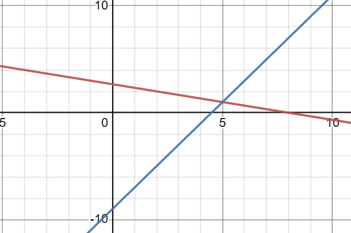

Here is an example of a system of linear equations solved by graphing:
x+3y=8
2x-y=9

As you can see in the graph, the solution is (5,1)
Here is a example of a system of linear equations solved by substitution:
x=2y
x+y=21
Next, substitute the value of x from the first equation into the second equation
2y+y=21
3y=21
y=7
Substitute the value of y back into one on the original equations
x=2(7)
x=14
So, the solution is (14,7)
Here is an example of a system of linear equations solved by elimination:
2x+y=15
3x-y=5
Adding the equations to eliminate one variable:
5x=20
x=4
Substituting the value of x back into one of the original equations:
2(4)+y=15
y=7
So, the solution is (4,7)